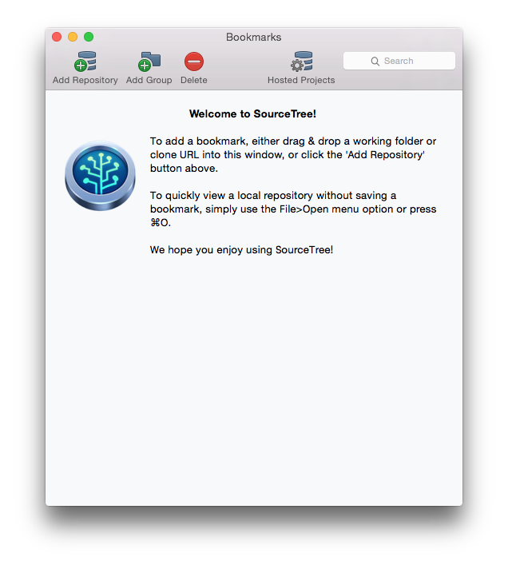

Github入门
Git & Github
Git
Git是一个分布式版本控制工具
Github
Github是一个共享虚拟主机服务，用于存放使用Git版本控制的软件代码和内容项目

Git & Github
- Git是工具
- Github是代码仓库
任务
用git来进行团队协作
今天使用GUI

下载 SourceTree

(点击上图下载)
练习
Step 1
- 设置好SourceTree
打开下载好的文件

打开SourceTree

打开后的界面
小调整
调整后的界面
Repo URL
HTTPS clone URL
https://github.com/h1994st/Hello-Github.git
添加到SourceTree
点击"Add Repository"
将上页中的"HTTPS clone URL"复制到"Source Path / URL"中
添加后的效果

Step 2
- 提交变更
双击打开Repo

修改项目所在文件夹的内容
修改后效果如下：
将变更的文件载入
效果如下：
提交 Commit
现在将此前载入的变更全部提交，让git对工作状态进行记录
点击上方的"Commit"
点击"Commit"之后会看到如下界面
我们需要在下方输入框内输入"Commit Message"
输入后
点击右下角的"Commit"按钮进行提交
提交后会跳到如下界面
Step 3
- 将本地仓库推送到远端仓库(Github)
推送 Push
此前做过的更改都是保存在本地，如果与他人合作开发，则需要将本地仓库推送到远端，也就是Github
点击上方的"Push"
选择推送的分支
选择将哪个分支进行，此处修改的是"master"分支，所以选中"master"
推送完成
可以看到"master"和"origin/master"标签都已经移到第一行了，这表明本的的"master"分支和远端的"master"都是最新的，并且两者一致
Step 4
- 新建分支并进行修改
- 推送分支到远端
分支
一个项目可以有许多分支，不同分支也可以进行合并，也可以自行发展
新建分支
点击上方的"Branch"
新建分支
输入"New Branch"的名称
新建分支后又跳到如下界面
可以看到新标签指向第一行，并且当前工作去跳到了新建的分支
修改当前分支内容，提交并推送到远端
步骤和前文一样
预告一下乱七八糟的Merge
这是在一系列分支后Merge的结果，如图：

Basic Commands
git add . -A // 载入变更
git commit -m "..." // 提交，在双引号中填写commie message
git commit -v -a // 提交前review一遍，在第一行填写commit message
git push origin master // 将本地的master分支推送到远端
git pull origin master // 获取远端数据，并合并到当前分支
git checkour ... // 切换到名为...的分支
git branch ... // 新建一个名为...的分支
git merge ... // 将名为...的分支合并到当前分支
更多信息参见：